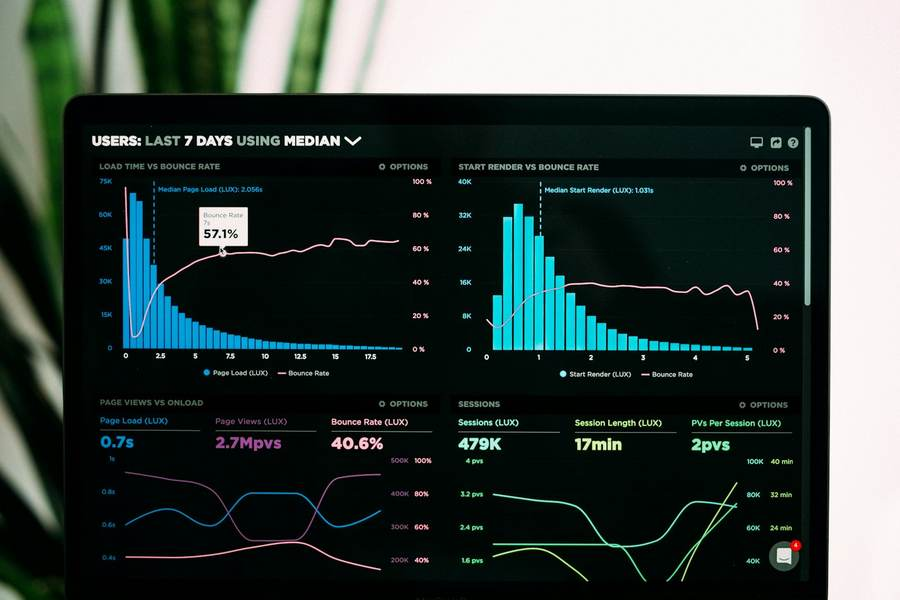

Security Posture
01 / 05PostureOne
Website and cloud security posture in one view, with findings, owners and evidence in a single place.
XSignOn gives people and AI agents the right access at the right moment, with human oversight woven into every decision. One platform for posture, sign-in, evaluation and day-to-day access operations.
Aligned with the frameworks your auditors ask about

PostureOne, 1 of 5
Works alongside the tools your teams already use
Teams want one accountable sign-in for every person and agent. Govern who and what gets access, and prove it with confidence.
View solutionTeams want AI evidence ready with confidence. Map AI use to frameworks and keep evidence ready.
View solutionTeams are preparing early for post-quantum methods. Inventory what you rely on and plan the move with clarity and confidence.
View solutionTeams want access reviews, approvals and evidence in one governed, repeatable flow, with clarity at every step.
View solutionIdentity sits across every system you run. Connect the platforms you already have into one governed sign-in and access layer.
View solutionRemoving passwords changes more than the login screen. Enrollment, recovery and support all shift, and the rollout order matters more than the hardware.
Read the articleAgentic AI divides a job among specialized agents that plan, act and check each other's work. For security and governance, that structure is the point: every action owned, scoped and reviewable.
Read the article
XSignOn works with regulated teams to replace passwords with sign-in people can trust, and to govern access for staff, devices and AI agents with evidence an auditor can check.
Our name points at the moment that matters most: the sign-on. We focus our work there, from the keys staff carry to the governance behind them.
Every claim about posture points at evidence a reviewer can open.
The governed path is the fastest path, with clear guidance at every step.
Every account, key and AI agent has a named owner.

We assess how sign-in, access and AI use actually work today: which accounts exist, who owns them, and where passwords remain.
You get: a posture snapshot in PostureOne and a prioritized list with owners.
We design the target state across products, policies and frameworks, then sequence the rollout so every team keeps continuous access.
You get: a target architecture, a phased plan, and recovery flows tested with real staff.
Posture stays current after go-live. Access reviews run on a cycle and evidence stays mapped to the frameworks your auditors use.
You get: current posture in one view and evidence ready when an auditor asks.
Governance on the inside
01
Ideas from the team building it
Featured
On and off is too blunt for agents that book, buy and build. Five tiers give teams a vocabulary for autonomy that grows with evidence.
Read the articleGive each agent the smallest scope that lets it do great work, name the owner, and let the boundary do the reassuring.
Passkeys, biometrics, hardware keys and one-time codes each shine in different moments. The craft is in choosing per moment, not per policy.
Small scopes, attached evidence, a named reviewer. Code review culture already solved the shape of agent evaluation; we borrowed it.
When every decision carries its sources with it, trust stops being a promise and becomes something a reviewer can open and inspect.
3 of 3 selected
| Compare products | PostureOneView PostureOne | | AUTH TouchView AUTH Touch |
|---|---|---|---|
| What it does | Website and cloud security posture in one view. | Identity analytics and MFA through a governed identity provider. | A FIDO2 security key: one touch confirms the person is present. |
| Best for | Findings, owners and evidence in one place. | A live view of sign-in and MFA coverage at scale. | The simplest sign-in step: connect, tap, done. |
| Delivery | Platform viewMapped to frameworks | SaaSOn-premisesAir-gapped | Hardware keySupported by XSignOn |
| Works with | WebsitesCloud servicesData stores | Passwordless KeysAMS | Existing identity providerAMS |
Select products to compare
A living inventory of every person, device and agent, with posture scored continuously so reviews start from evidence instead of spreadsheets.
View moreSign-in your team will love: passkeys, biometrics and hardware keys in one calm flow, with recovery paths people can actually follow.
View moreAgents are evaluated the way great teams review code: structured checks, attached evidence and a named reviewer before authority grows.
View moreBehavioural and contextual signals stream into every access decision, so the platform responds to the moment rather than a static rule.
View moreThe day-to-day home of access operations: requests, approvals and periodic reviews with clear owners and a complete trail.
View morePostureOne protects public infrastructure: websites and cloud services, in one posture view. Firewall, traffic protection, file integrity, content security policy, data posture and micro-segmentation come together with findings, owners and evidence, so every answer is clear and within reach.
Firewall protection for public websites and applications, with rules reviewed on a cycle and every change recorded as evidence.
Traffic protection that stays on around the clock, keeping public services reachable and steady for the people who rely on them.
Files across web and cloud estates are monitored continuously, and every change is logged with an owner and a timestamp.
Content security policies are managed from one place, so coverage stays complete as sites and services change.
DSPM brings data stores into the same posture view, with findings assigned to owners and tracked to closure.
Workloads are segmented so each service reaches only what it needs, with the segments visible in the posture view.
Websites, cloud services, data stores and segments are inventoried into one view.
Findings carry owners and next steps, and close with evidence attached.
Evidence stays mapped to the frameworks your auditors use, ready at any moment.
AI services on the estate join the same posture view, with owners named.
Segmentation and policy coverage keep every public service at its best posture.
Posture stays current as the estate changes, so teams ship with clarity.
Mappings apply where the framework fits your setup. Nothing is shown as mapped until its source is connected and its evidence is attached.
EvalOne evaluates AI systems against recognized frameworks. AI is moving into production with momentum, and reviewers value clear evidence of how AI is governed. EvalOne maps AI use to frameworks, tracks the gaps, and produces evidence a reviewer can follow with ease.
Which AI systems are in use, where they run, and who is responsible for them. Every system joins the inventory with an owner, so coverage stays complete and clear.
AI use is mapped control by control to the frameworks your reviewers use, so assessments start from a complete map instead of a blank questionnaire.
Gaps carry owners and deadlines. Progress is visible in one list, and every item stays active until it closes with evidence.
Evidence attaches as work completes, so an assessment exports a pack a reviewer can follow with ease.
Systems, vendors and deployments are listed with owners, including AI adopted directly by teams across the organization.
Each system is mapped to the controls of the frameworks that apply to it, showing coverage clearly for every system.
Owners work the gap register in priority order, attaching evidence as each gap closes.
Assessments and audits receive an evidence pack that traces each claim back to its source.
EvalOne runs a six-layer evaluation framework, and every layer is mapped to the recognized frameworks your reviewers use, so one evaluation produces evidence for all five.
| Framework | What EvalOne maps |
|---|---|
| NIST AI RMF | Govern, map, measure and manage functions, evidenced layer by layer. |
| OWASP | Application and LLM security checks, with results attached to each system. |
| MITRE ATLAS | Technique coverage for AI systems, tracked in the gap register. |
| EU AI Act | Obligations by system category, with owners and evidence for each one. |
| ISO/IEC 42001 | AI management system controls, mapped to your policies and reviews. |
Evaluations apply where the framework fits your AI use. A system is only shown as evaluated against the frameworks it was actually assessed on.
Enterprise FIDO2 biometric security keys, delivered and supported by XSignOn. Keys provide verified authentication that only the account owner can complete. Staff carry their key with confidence, enrollment included, and XSignOn handles the hardware from order to replacement.
Fingerprint-based sign-in for everyday staff roles.
Spec confirmation pending: full specifications are confirmed before ordering. View the AUTH Bio pageBiometric sign-in for roles that need extended management options.
Spec confirmation pending: full specifications are confirmed before ordering. View the AUTH Bio Pro pageTouch-activated sign-in where a tap confirms the attempt.
Spec confirmation pending: full specifications are confirmed before ordering. View the AUTH Bio Touch pageDesktop-based sign-in for fixed workstations and shared terminals.
Spec confirmation pending: full specifications are confirmed before ordering. View the AUTH Bio Desktop page| Detail | AUTH Bio | AUTH Bio Pro | AUTH Bio Touch | AUTH Bio Desktop |
|---|---|---|---|---|
| Sign-in method | Confirm spec | Confirm spec | Confirm spec | Confirm spec |
| Form factor | Confirm spec | Confirm spec | Confirm spec | Confirm spec |
| Interface | Confirm spec | Confirm spec | Confirm spec | Confirm spec |
| FIDO2 certification | FIDO2 certified | FIDO2 certified | FIDO2 certified | FIDO2 certified |
| Delivered and supported by XSignOn | Yes | Yes | Yes | Yes |
Specifications are confirmed against your identity provider and device mix before any hardware is ordered. Cells marked for confirmation are never shipped as fact.
The keys are FIDO2 certified and work with existing identity providers through standard protocols, so the rollout does not start with replacing your stack. Compatibility and enrollment are confirmed against your provider before any hardware is ordered.
Enrollment, replacement and exceptions run through AMS, so your help desk stays focused on supporting staff.
AMS is the platform that delivers, enrolls and manages passwordless keys across the organization. Hardware is only half a passwordless program; the other half is getting keys into hands, arranging replacements with ease, and knowing at any moment which key belongs to whom. AMS carries that half, delivered and supported by XSignOn.
Keys ship to staff ready to enroll, with support handled by XSignOn. Keys that need replacement are handled through AMS, with clear tracking and support from XSignOn.
Guided enrollment for pilots, new starters and role changes, with recovery paths built around a verified key.
Every key carries its state: enrolled, active, scheduled for review, replaced. Exceptions stay visible until they are resolved with evidence.
Enrollment coverage and exception counts feed posture reporting, so key management shows up in governance evidence instead of a separate spreadsheet.
Roles are matched to key models, and the pilot group is enrolled first so recovery flows are proven before scale-up.
Keys arrive ready to enroll. Staff complete guided enrollment, and exceptions are handled with a human guide at every step.
Replacements, suspensions and revocations run through AMS with a full history per key.
Enrollment and exception data feed governance evidence, so the rollout result is checkable and ready to share.
AMS is the asset management system for AUTH keys. It tracks every key from delivery to retirement, with its holder, state and history in one record.
Users and roles define who administers the fleet: platform admins, enrollment leads and support staff each get the access their role needs, with named owners.
Inventory shows every key and its state: ordered, in transit, enrolled, active, scheduled for review, or replaced.
Enrollment workflows guide pilots, new starters and replacements, with recovery paths built around a verified key.
Policy controls set how keys are issued, reviewed and retired, so the fleet follows one consistent policy everywhere.
Audit exports the full history per key and per holder, ready for reviewers and governance evidence.
Deployments run in phases: pilot group first, then priority teams, with coverage visible at every step.
XSense is the identity analytics and MFA platform behind XSignOn sign-in. It is a software-bound identity provider: it runs the sign-in itself, analyses how identities are used across the organization, and gives governance teams a live, clear view of who is signing in, where, and with what assurance.
Deployment follows your estate: SaaS, on-premises, or air-gapped, with the same identity platform in each model.
XSense is a software-bound IAM and identity provider platform. It pairs identity analytics with MFA in one product, deployed as SaaS, on-premises, or air-gapped.
Overview. XSense runs sign-in for staff and systems, records every authentication with its assurance level, and surfaces the patterns governance teams review.
MFA targets set the assurance each application needs, so high-value systems ask for verified, hardware-backed sign-in while everyday tools stay fast.
The Verify app gives staff a clear approval step on their own device, paired with the identity XSense holds for them.
Features include identity analytics, MFA policy by application, deployment in SaaS, on-premises and air-gapped models, and evidence exports for review.
Roadmap items are published with each release. Roadmap details confirmed at release
Patent information is published with the product documentation. Patent details pending publication
Four ways to run sign-in, compared on what each one gives your team. XSignOn pairs FIDO2 hardware with a governed platform, so the sign-in itself, the enrollment behind it, and the evidence after it all come from one place.
| Capability | XSignOn | Password-based sign-in | One-time codes | Legacy MFA |
|---|---|---|---|---|
| Sign-in only the account owner can complete | Yes, with a verified key | Shared secret | Code shared by message | Added on top of a password |
| Nothing to remember or type | Yes | Password to remember | Code to type each time | Password plus a second step |
| Hardware-backed verification | Yes, FIDO2 keys | No | No | Varies by setup |
| Enrollment and lifecycle managed for you | Yes, through AMS | Reset by help desk | Managed per account | Managed per account |
| Recovery with a verified replacement | Yes, guided by AMS | Reset questions and calls | Re-registration per service | Re-registration per service |
| Evidence ready for access reviews | Yes, in PostureOne and XSense | Assembled by hand | Assembled by hand | Assembled by hand |
| Works with your existing identity provider | Yes, standard protocols | Yes | Yes | Yes |
Every XSignOn row is delivered by the products on this site: the keys, AMS, XSense and PostureOne, working as one program.
Case studies live here, attached to the products they prove. Each study names the product deployed and the goal it supported. Where outcomes are still being sourced, that is marked clearly.
A bank in Abu Dhabi replaced password sign-in for branch and back-office staff with FIDO2 keys supplied and supported by XSignOn, managed through AMS.
Sourced outcome needed: one verifiable result, with its source and date, is added here before this page ships. No number is shown until it is sourced. Read the case studyPasswordless access for a global healthcare enterprise, where clinical and administrative staff sign in across shared workstations and shift changes.
Case details pending: deployment specifics are confirmed and sourced before this page ships. Read the case studyBiometric FIDO2 access for air-gapped industrial systems in Asia, running on the XSense identity platform with the AMS module.
Case details pending: deployment specifics are confirmed and sourced before this page ships. Read the case studyBiometric-only authentication for a global IT enterprise, where every sign-in is completed with a verified key.
Case details pending: deployment specifics are confirmed and sourced before this page ships. Read the case studyNo case study result is shown without a source. To see the time your own team can save, the ROI calculator computes an estimate from the numbers you enter.
A bank in Abu Dhabi used password sign-in for branch and back-office staff. Teams spent time each week on password resets and sign-in support, and the bank wanted a smoother, verified experience that matched the high standards of the rest of its operations.
The bank set out to give every team member sign-in that works at the speed of branch operations and meets the audit standards the rest of the business already upholds.
FIDO2 keys supplied and supported by XSignOn replaced password sign-in for branch and back-office staff. Enrollment, replacements and exceptions ran through AMS, so the bank's help desk stayed focused on supporting staff.
A pilot group enrolled first. Enrollment and recovery flows were tested with real staff, and the order of the wider rollout was set from what the pilot taught.
Branch staff enrolled in phases, so every branch kept continuous sign-in during the move. Replacements and exceptions ran through AMS.
Back-office teams followed, with help desk time freed as staff moved to verified keys. Coverage stayed visible in AMS throughout.
A global healthcare enterprise set out to give clinical and administrative staff passwordless access. Staff sign in across shared workstations and shift changes, where fast, verified sign-in helps care teams keep moving smoothly. This study covers the FIDO2 key rollout for that environment, completed in March 2020.
An electrical operator in Asia runs industrial systems that are air-gapped by design, separated from public networks. Sign-in for those systems has to work fully on site, with the same assurance as any connected system. This study covers biometric FIDO2 access for that environment, completed in December 2023.
The deployment runs on the XSense identity platform, with XSenseCPP at the systems and the AMS module managing the keys.
A global IT enterprise set out to run biometric-only authentication: every sign-in completed with a verified key, for every team, in every region. This study covers that move, completed in July 2020.
Start from the problem you are solving
Teams want one accountable sign-in for every person and agent. Govern who and what gets access, and prove it with confidence.
View solutionTeams want AI evidence ready with confidence. Map AI use to frameworks and keep evidence ready.
View solutionTeams are preparing early for post-quantum methods. Inventory what you rely on and plan the move with clarity and confidence.
View solutionTeams want access reviews, approvals and evidence in one governed, repeatable flow, with clarity at every step.
View solutionIdentity sits across every system you run. Connect the platforms you already have into one governed sign-in and access layer.
View solutionEvery identity, fully in control: identity command, three deployment models, and a standards posture for enterprise estates.
View the Enterprise pageRuns in the cloud, with identity command from day one.
Runs in your own data centers, under your control.
Runs fully on site, apart from public networks.
Teams want one accountable sign-in for every person and agent. Accounts grow across systems, and leaders want a single, clear view of who can reach what and why, with approvals and provenance for every access.
Teams are bringing AI into production and want clear, ready evidence of how each system is governed: who owns it, what data it touches, and which frameworks it was assessed against. XSignOn keeps that evidence current and ready to share with confidence.
Teams are preparing early for post-quantum methods and want a clear inventory of the cryptography they rely on today. With that inventory in place, planning becomes confident, sequenced and ready to share.
Teams want access reviews, approvals and evidence collection in one clear, repeatable flow. Each cycle confirms access with confidence, keeps exceptions current, and produces a record reviewers trust.
Identity sits across every system you run: directories, SaaS, branch terminals, plant systems. Teams want the platforms they already have working as one governed layer, with clear ownership for every connection.
Removing passwords changes more than the login screen. Enrollment, recovery and support all shift, and the rollout order matters more than the hardware.
Read the articleThe questions that show up in AI assessments, and the evidence that answers each one.
Read the articleSegments drawn around identities stay accurate, because they follow the thing that actually requests access.
Read the articleService accounts, automations and AI agents hold access too. Each one gets an owner, a scope, and a review cycle.
Read the articleAgents that plan, act and check each other's work, governed with owners and evidence from the first deployment.
Read the articleNew thinking on identity, AI governance and verified sign-in, in your inbox as it publishes.
Teams planning a passwordless rollout spend most of their energy on the sign-in moment: the key, the tap, the biometric. That moment is the easiest part. Moving to verified keys improves enrollment, recovery and support even more than the login screen, and those three shape a confident rollout.
Enrollment is the first contact most staff have with the new system, and clear, guided enrollment sets a confident tone from day one. Recovery is the moment that matters most: a staff member who needs a replacement key on a Monday morning is working again by Monday afternoon, with a verified key and human support. The help desk shines in both, because every enrollment and recovery is a chance to give staff a smooth, supported experience.
The instinct is to start with the easiest group. The better move is to start with a priority group small enough to learn from. A pilot with branch managers or field staff shows how enrollment works in the real world, while the group is small enough that each person gets a human response.
Phasing protects access during the move. Every team member keeps access to the systems they need throughout the rollout. Parallel sign-in during the transition is a strength: it keeps the business running smoothly while the secure path becomes the default.
Keys move help desk work to enrollment and replacement, which are planned events teams can schedule. The help desk gains work it can plan, measure and improve, and staff gain time back every week.
That shift is worth naming when you ask for the budget. The value case for passwordless is clear: time saved on resets every week, smoother days at the branch, and sign-in that meets the same high standard as the rest of the program.
AI governance assessments start with questions that sound simple: which AI systems are in production, who owns them, what data they touch, and which frameworks they were assessed against. Most teams hear these questions and start a document search, because the answers live in procurement threads, vendor pages and someone's memory.
That search is the finding. An assessment that begins with assembling evidence from scratch is already telling the reviewer that governance follows use instead of preceding it.
Inventory. A list of AI systems with owners and deployment locations. Team-led AI, the deployments adopted directly by teams, belongs on this list with pride of place, because a complete inventory gives the assessment its full, accurate scope.
Control mapping. Each system mapped to the controls of the frameworks that apply to it, showing coverage clearly for every system. A map with gaps marked clearly is credible and ready to act on.
Ownership and change. Who is responsible when a model changes, a vendor updates terms, or a new deployment appears. Evidence that a system was assessed once is worth less than evidence that it is assessed continuously.
The cheapest time to build AI governance evidence is before anyone asks for it. Inventory first, map controls second, and attach evidence as work completes. When the assessment comes, the evidence pack exports from work already done, and the questions become a walkthrough instead of a search.
Micro-segmentation divides an estate into small, governed zones, so each workload and service reaches only what it genuinely needs. The modern version starts with identity: who and what is asking, with what assurance, before any connection is allowed.
That ordering matters. A segment drawn around network addresses alone drifts as services move. A segment drawn around identities and their verified sign-in stays accurate, because it follows the thing that actually requests access.
The practical first step is an inventory: which services exist, which identities use them, and which connections happen every day. With that map in place, segments are drawn around real work, and every boundary has an owner.
Rollout follows the same pattern as any good identity program: priority services first, evidence as you go, and a posture view where the segments and their coverage stay visible.
Each segment produces its own record: what it contains, who owns it, and which connections it allows. When reviewers ask how the estate is divided and why, the answer is the working map itself, current and complete.
A growing share of sign-ins comes from non-human identities: service accounts, automations, integrations and AI agents acting on behalf of teams. Each one holds access, and each one deserves the same governance as a person's account: an owner, a scope, and a review cycle.
The opportunity is to govern them by design from the start. Human sign-in took years of programs to bring under one view; non-human identities can join that view now, while their numbers are still easy to inventory.
A dynamic security model treats identity as a living inventory. Non-human identities are registered when they are created, their access is scoped to the task they perform, and their activity is recorded with the same evidence as any staff sign-in.
Reviews then cover the whole estate: people, devices, services and agents in one cycle, with approvers named in advance and exceptions carrying clear dates.
Start with the inventory: which non-human identities exist, what they can reach, and who is responsible for each. That single list turns agent and service access from background noise into governed, provable access, and it is the foundation every later control builds on.
This calculator estimates the time your team can save with verified sign-in, from the numbers you enter. Every result is computed live from your inputs and labeled as an estimate. Published figures from XSignOn deployments are being sourced and will be added with their sources.
Your inquiry is ready.
This redesign mock does not send messages directly. Copy your inquiry below to send it through your usual channel.
What happens next. Every inquiry goes to a person who replies with care. Strategy calls are short working sessions on your access, AI governance or quantum readiness goals, and you leave with a clear next step.
Office. XSignOn Corporation, 3900 S Stonebridge Dr., Suite 1101, McKinney, TX 75070.
Phone. +1 469-897-9399
Email. info@xsignon.com
This form is designed to be quick and welcoming. To book quickly, choose "Book a strategy call" and share your preferred timing in the message.
We work the way our products work: claims point at evidence, and owners are named. It applies to posture reviews and to how we run the company.
Security work that slows teams down is unfinished design. We hold our own tools to the standard we sell.
XSignOn is an early team in McKinney, Texas. The work touches products customers trust for every sign-in.
Build and run the security engineering behind XSignOn products, working from the McKinney office with a hybrid schedule.
Apply through ContactEvaluate AI systems against recognized frameworks and keep customer evidence ready for review, working remotely.
Apply through ContactFor roles beyond the two listed here, send your background through Contact and choose "Careers" as the reason.
Contact us about careersPlaceholder copy for legal review. This section will describe the categories of information XSignOn collects from visitors, customers and trial users, and how each category is collected.
Placeholder copy for legal review. This section will describe the purposes for which collected information is used, including providing products, responding to enquiries and improving the service.
Placeholder copy for legal review. This section will describe when information is shared with service providers, partners or authorities, and the safeguards that apply.
Placeholder copy for legal review. This section will describe the rights individuals have over their information, including access, correction and deletion, and how to exercise them.
Placeholder copy for legal review. This section will name the point of contact for privacy questions and requests.
Placeholder copy for legal review. This section will set out the acceptable and prohibited uses of this website and its content.
Placeholder copy for legal review. This section will describe how product descriptions, trials and orders on this site relate to the agreements that govern actual use.
Placeholder copy for legal review. This section will describe ownership of site content, trademarks and product names.
Placeholder copy for legal review. This section will describe the limits that apply to liability arising from use of the site.
Placeholder copy for legal review. This section will name the point of contact for questions about these terms.
The address you entered has been recorded for removal from XSignOn marketing emails.
Agentic AI systems divide a job among specialized agents that plan, act and check each other's work. Frameworks such as AutoGen make that pattern practical: agents hold defined roles, pass tasks between them, and keep a record of what each one did.
For security and governance work, that structure is the point. A finding can be gathered by one agent, verified by a second, and prepared for human review by a third, with the full trail available as evidence.
Every agent is a non-human identity, and it earns the same treatment as any other: a named owner, a scoped set of permissions, and activity that is recorded and reviewable. The system prepares, and the human decides, at the steps that matter.
Evaluation keeps pace with deployment. Agent behavior is tested against recognized frameworks before release and monitored after it, so confidence in the system is based on evidence, refreshed continuously.
A well-governed agentic deployment reads like a good team roster: each agent has a role, a manager, and a clear boundary. Teams that set those three things up first find that scale is the easy part.
Enterprise teams run identity across thousands of people, devices, services and AI agents. XSignOn gives those teams one command view: every identity inventoried, every sign-in verified, and every access carrying an owner and evidence.
The platform runs in the cloud, with identity command available from day one and updates handled by XSignOn.
The platform runs inside your own data centers, under your operational control, with the same command view.
For estates separated from public networks, the platform runs fully on site, as proven in the Electrical case study.
Evidence for each standard is produced from the work itself: sign-ins, reviews and policy changes recorded as they happen.
AI use is now part of everyday operations, and governance is joining the security agenda: inventories, owners, and evidence for every system in production.
Full text pending: this piece is being prepared for publication.Team-adopted AI, brought into the open and into the inventory, with owners and evidence.
Full text pending: this piece is being prepared for publication.Verified sign-in sized for growing teams: keys, guided enrollment, and support that scales.
Full text pending: this piece is being prepared for publication.Identity-first sequencing for zero trust programs: verify the person and the agent first.
Full text pending: this piece is being prepared for publication.Evidence gathered as work happens, so reviews open with the record already complete.
Full text pending: this piece is being prepared for publication.The framework translated into inventories, control maps and reviewer-ready evidence.
Full text pending: this piece is being prepared for publication.Review cycles that run all year, with owners and deadlines carried in one flow.
Full text pending: this piece is being prepared for publication.New thinking on identity, AI governance and verified sign-in, in your inbox as it publishes.
This redesign mock does not sign you in. In the live product, your verified key completes sign-in here.
Back to homeNew to XSignOn? Create an account
Already have an account? Log in
It depends on scope: user count, device mix and recovery needs. Rollouts start with a pilot group, then phase in priority teams first, so every team keeps continuous access during the move.
PostureOne maps evidence to the frameworks named across this site, including NIST AI-RMF, SOC 2 and ISO 27001, and shows only the mappings that apply to your setup.
Yes. The keys are FIDO2 certified and work with existing identity providers through standard protocols. Compatibility and enrollment are confirmed against your provider before any hardware is ordered.
A short working session on your access, AI governance or quantum readiness goals. You leave with a clear next step. You choose your next step with complete freedom.